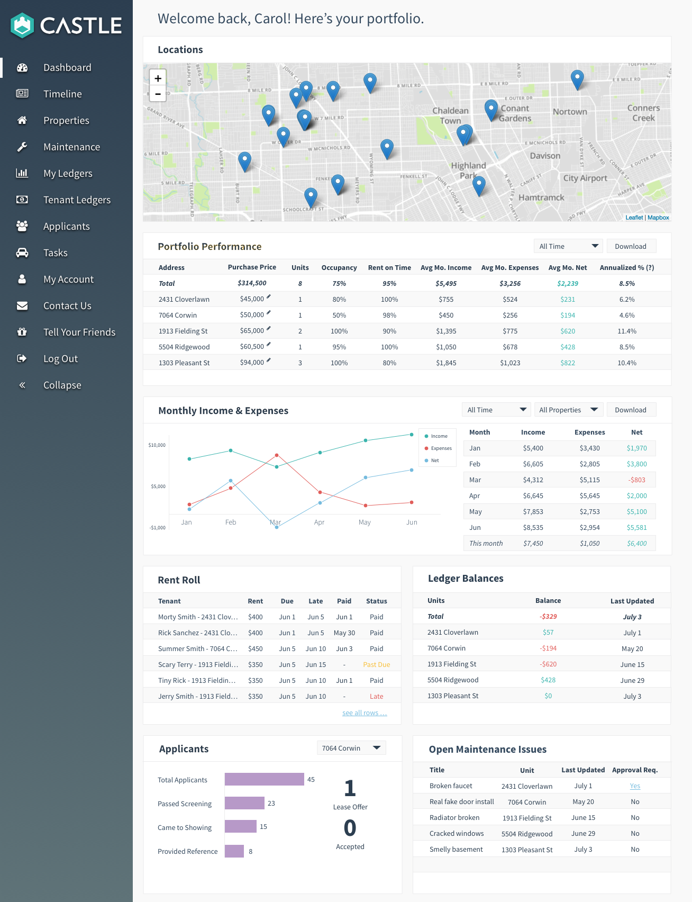
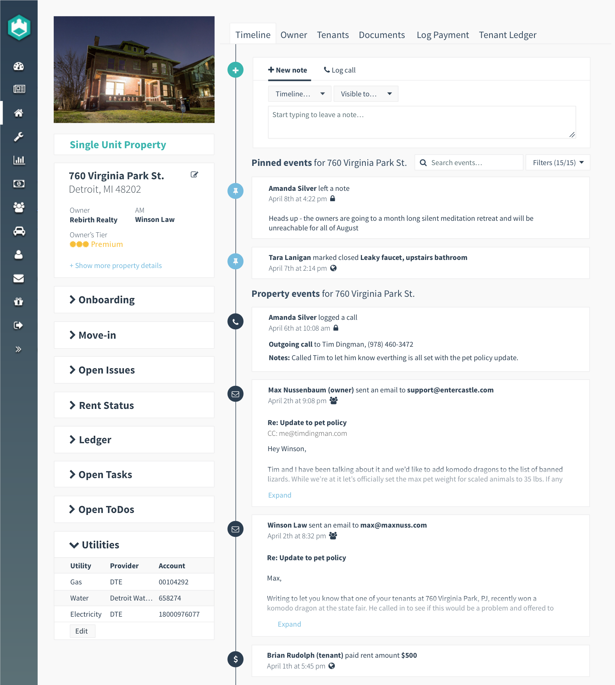
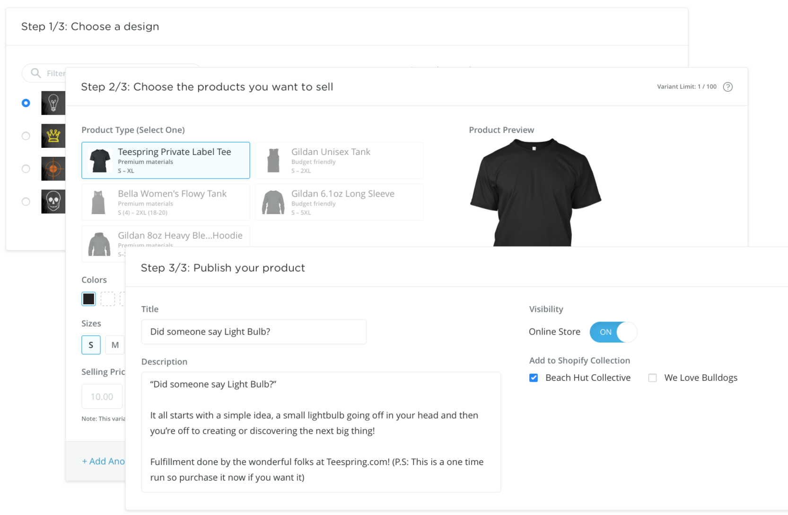

Stack: Node, TypeScript, Angular, Javascript, Firebase
My role: Engineering with two teammates, User Research, Product Design
Castle users are typically real estate investors with portfolios of several single-family homes. This dashboard was designed to give users a high-level overview of the status of their properties.
Stack: Node, TypeScript, Angular, Javascript, Firebase, Elastic Search
My role: Engineering with two teammates, User Research, Product Design
Internally, Account Managers at Castle need to stay up-to-date on all events going on at users' properties. This feature give AMs a timeline where automatic events are created when there is activity tracked by the app, or when anyone at the company logs information.
Stack: Ruby, Ruby on Rails, MySQL, S3
My role: Back-end Engineering
Teespring is a site for designing, selling, and producing custom apparel. While the site provides a marketplace for selling, many users prefer to sell on their own storefronts hosted by Shopify. This integration allowed users to sell their products on Shopify while still using Teespring's fulfillment.
